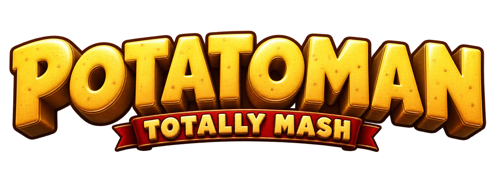
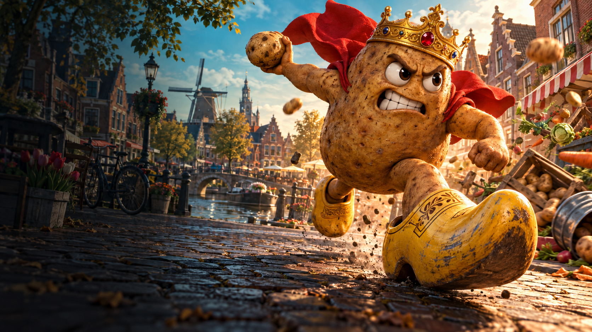
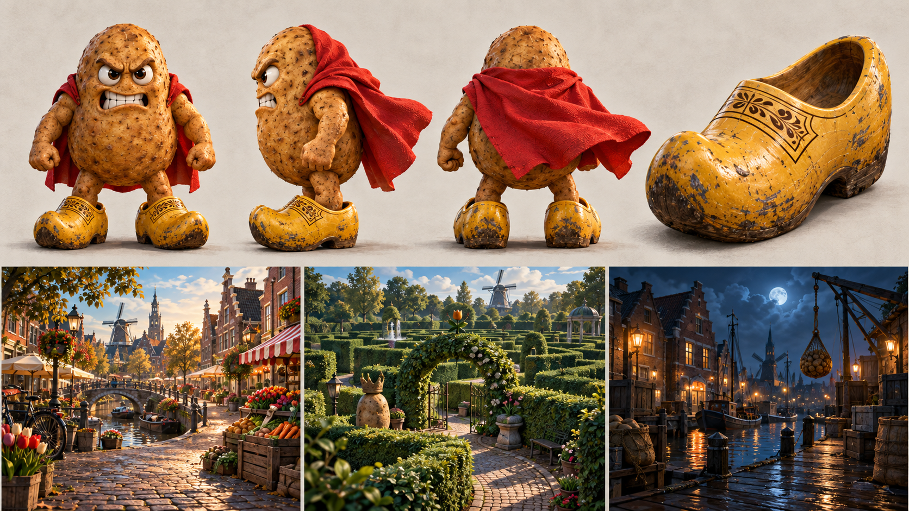

Four worlds. Ten rounds. One top spud.
Throw → Spud gun → Special weaponThree straight round wins earn the crown.
Two-minute rounds. Bonus hunts between levels.Keyboard, controller or touch.
Start at any level. Two minutes each, with a 40-second hunt between levels.
Move the mouse to pan and aim. No mouse button needs holding. Use left click or F to fire, Space to jump, Left Shift to dodge, E to catch and Left Ctrl to duck; customise your keyboard and controller below.
Default: 2 minutes. Choose 1–10 minutes in 30-second steps. Duration changes apply to the next main round. Bonus hunts stay at 40 seconds.
Every circuit rotates maps and modes and avoids the previous opening world. World Select uses the standard layouts for practice and maze records. Power-ups: green = faster running, orange = faster throwing, violet = higher jumps.
Chill gives you room to learn: slower rivals, forgiving aim and no catches.
Recorded funk in the arenas, action music in the hunt. Potato commentary is saved for last place at the end of a round.
Music starts when you play. Use Preview Music to check the volume.
Only Moira and Rishi are used: Moira for potato commentary and Rishi for hurt reactions when both are available. No other voice is used. If neither is available, speech stays off. Pain reactions are spaced out; last-place commentary plays once after each main round. Headphones bring out the direction and distance of recorded effects.
Music: “Funk Game Loop” and “Go Cart – Loop Mix” by Kevin MacLeod, CC BY 4.0. Edited for looping and volume. Music & sound credits.
Select a key, then press its replacement. Existing assignments swap automatically. Escape always pauses and cancels rebinding.
Move the mouse to pan. If your browser cannot capture it, keep the cursor near an edge to continue turning, then move it back to stop. Keyboard movement or a click in the arena can enable mouse capture. Escape releases the cursor; use Escape again or the pause button to pause if your browser uses the first press to unlock.
Left stick moves; right stick looks. Menu pauses. Press any button after connecting.
Preferences save on this device.
No controller detected yet.
Desktop local PvP uses split-screen. Touch supports solo and online play in landscape. Online matches use one player per device; the host keeps the match running.
Maze rounds: beat your fastest escape before time runs out. Equal times share victory; no completed run means no winner.


Original concept artwork · 1672 × 941 each. The playable 3D characters and environments are prototype assets.
The clock and all players are paused.
Your player name and motto appear on the leaderboard. This browser remembers your player. Every session saves automatically, including unfinished rounds.
Every play counts, including early exits. Hits +10, knockouts +100, crates +50, zones +5/sec, course gates +25 and escapes +300. Your best session ranks here. Maze boards rank standard-layout escapes. Remix circuits save scores and player stats; random maze times stay in the match. Equal scores share rank.
Exactly three friends, one player per device. No bots. All three players must join before the host can start.
Keep the host’s game open. If the host leaves, the room closes.
Bluetooth pairing happens in your device settings. The game detects controllers that are already connected.
Left stick: move · right stick: camera · R2: throw/fire · L2: catch · Cross: jump · Circle: dodge · Triangle: reset camera · Options: menu. Change action buttons in Controls & Settings.
Planting potatoes…